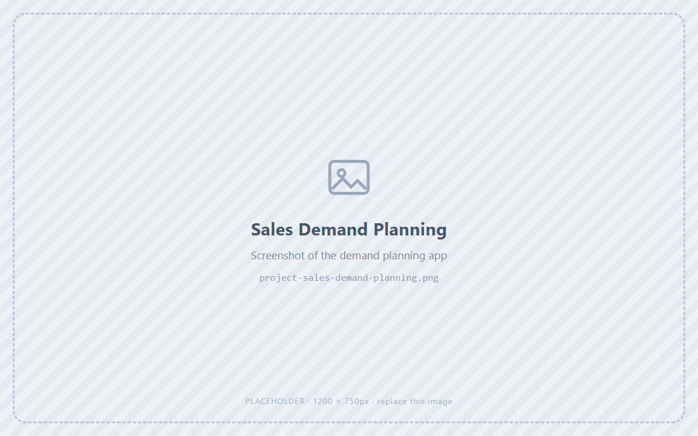

Connect the plan with what actually gets delivered
Sales Demand Planning, part of the KINsight environment, supports the distributor replenishment lifecycle: preparing a monthly stock plan, issuing a proposed order, receiving distributor confirmation, reviewing approvals, recording the sales order, and following delivery to its destination.
The application connects internal sales, distributor representatives, sales administration, and factory/logistics teams. Reporting adds context from sales performance, stock, credit status, and fulfillment so teams can review the plan alongside operational facts.
Keep planning intent and execution aligned
The quantity proposed in a replenishment plan is not necessarily the quantity a distributor confirms, the quantity approved, or the quantity delivered. Each stage belongs to a different business responsibility, but the records need to remain connected.
Reporting introduces a second challenge: sales into a distributor, sales out of a distributor, stock snapshots, and goods in transit have different meanings. Useful planning depends on maintaining those distinctions rather than combining similar-looking quantities into a single total.
Key features
- Versioned replenishment plans
Monthly plans organize distributor and product lines with recent sales averages, stock targets, Days Sales of Inventory (DSI), stock in transit, arrival estimates, and recommended order quantities. Plan versions retain a clear reference for the CMO issued from them.
- CMO generation and distributor confirmation
A CMO is the monthly order proposal issued from a replenishment plan. The application generates the document and Excel output, then records the quantities the distributor confirms, supporting direct and distribution flows, confirmation phases, and supporting purchase-order files.
- Approval and sales-order handover
Submitted confirmations move through configured approval stages. Sales administration records the sales-order reference after approval, connecting the commercial agreement to the fulfillment workflow.
- Delivery and logistics tracking
Factory dispatch, vessel movement, and delivery arrival are tracked through estimated and actual dates. Logistics partner feeds supply tracking information that can be reviewed alongside the order and shipment records.
- Sales, stock, and fulfillment analytics
Overview and drill-down views cover sales orders and distributor groups, while reporting modules examine sell-in, sell-out, stock, DSI, and targets. The reporting work includes translating existing Power BI definitions into custom web views and validating the resulting measures against their source definitions.
- Roles and business-data scope
Permissions control available actions, while user scope limits the relevant areas, sub-regions, distributor groups, or customers. Internal employees and external distributor representatives participate through their appropriate login and workflow roles.
One connected replenishment lifecycle
The workflow keeps each business handover explicit. A plan provides the recommendation; the distributor provides its commitment; approval establishes the next action; the order and shipment records show execution.
A recommendation is not yet a confirmed order. Planning, distributor confirmation, approval, and fulfillment remain distinct stages with their own actors and records.
- Prepare the monthly plan
Load and review the distributor/product planning lines for the selected month and version, including sales history, stock context, and recommendation quantities.
- Issue and confirm the order proposal
Area sales generates the CMO. The distributor records confirmed quantities and supporting information, then submits the confirmation for review.
- Approve and record the sales order
The configured area approval stages review the submitted confirmation. Sales administration adds the sales-order reference for the approved transaction.
- Follow delivery and review performance
Factory/logistics maintains shipment information and follows arrival progress. Teams use the reporting views to inspect fulfillment, inventory, and exceptions rather than treating the original plan as proof of completion.
My contribution
I developed the web application and its backend workflows to connect distributor planning, confirmations, approvals, sales-order references, and delivery information. The work brings multiple business roles into a common process while retaining the scope of each role’s actions and data.
I also worked on the reporting layer: mapping source fields, building interactive views, and tracing differences between existing Power BI or spreadsheet references and the web calculations. That includes checking the reporting period, stock snapshot, transaction source, and dimensional mappings before changing a formula.
A key design principle is to preserve the identity of each stage. A replenishment recommendation, a distributor confirmation, and a shipment are related records, not interchangeable versions of the same business fact.
Workflow services backed by business data
The application combines an Angular and TypeScript frontend with Express services on the Bun runtime. PostgreSQL, Prisma, and Knex support application records and reporting access. Company SSO and partner login support internal and external participation, with role permissions and business-data scope applied to the workspace.
Reporting must preserve the meaning of its inputs. Sell-in, sell-out, closing stock, and goods in transit describe different business events; the selected period and data grain affect the resulting measures.
SAP supplies sales and fulfillment information; logistics integrations provide shipment events; warehouse reporting views organize sales and stock data. Power BI provides existing report references and embedded analysis, while custom web reporting supports application-specific interaction and drill-downs.
Reporting calculations must respect the underlying grain. For example, weekly stock represents a closing snapshot rather than a sum of daily stock balances. DSI depends on the intended sales basis and selected period, so its denominator and time window must be explicit.
Outcomes & engineering lessons
The application provides a shared record of the distributor order lifecycle, connecting planning intent to confirmation, approval, and delivery. Its reporting views give the teams a way to review sales and stock context alongside fulfillment rather than navigating disconnected stages.
The main engineering lesson is that reliable planning requires explainable data as well as a usable workflow. Similar measures can differ because they use different transaction types, dates, stock snapshots, or customer mappings. Tracing those differences makes both the operational process and its reporting easier to maintain.